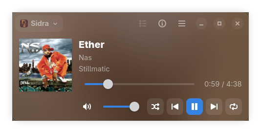

See the whole song
Album art, title, artist, album, and progress are right where you need them, with artwork gracefully falling back when it’s missing.
01 / THE ESSENTIALSOPEN SOURCE · MADE FOR LINUX
A small, beautiful home for the music playing on your desktop. See what’s on, switch players, and stay in control without breaking your flow.

All the everyday controls you expect, thoughtfully tucked into a compact desktop companion.
Album art, title, artist, album, and progress are right where you need them, with artwork gracefully falling back when it’s missing.
01 / THE ESSENTIALSChoose from available MPRIS players. The app follows along as players open, close, and change tracks.
02 / YOUR CHOICEPlay, pause, skip, seek, and adjust volume. Shuffle, repeat, and a scrollable queue appear when your player supports them.
03 / FULL CONTROLSwitch to compact mode, keep it in the background, or use a status indicator when your desktop supports one.
04 / MADE FOR LINUXBuilt with GTK4 and libadwaita, MPRIS MiniPlayer speaks the same MPRIS language as your favorite media apps. No account, no music library to import, no player lock-in.
Download the latest release, pick the package for your system, and press play.
Browse release downloadsInstall the downloaded Flatpak bundle for your user account.
flatpak install --user ./MPRIS-MiniPlayer-*.flatpak
Install the downloaded Debian package with APT.
sudo apt install ./mpris-miniplayer_*_amd64.deb
Install the downloaded RPM package with DNF.
sudo dnf install ./mpris-miniplayer-*.x86_64.rpm
Start an MPRIS-compatible media player, then open MiniPlayer from your application launcher.
Prefer building it yourself? Find the source and build instructions on GitHub